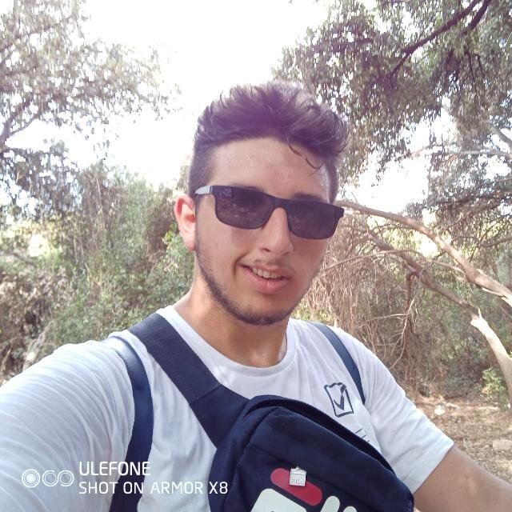

La Nostra Storia
Siamo un'azienda dedicata alla vendita di attrezzature per il fitness e il benessere. La nostra missione è fornire prodotti di alta qualità per aiutarti a raggiungere i tuoi obiettivi di salute e fitness.
Il Nostro Team
Il nostro team è composto da esperti del settore che sono appassionati di fitness e benessere. Siamo qui per aiutarti a trovare l'attrezzatura giusta per le tue esigenze.
-

Joseph Marrone
Informatico e sviluppatore di successo, fondatore di aziende come CodeTitan Industries e NeuralCore Technologies. Esperto in software e intelligenza artificiale, è anche un appassionato di fitness e powerlifting, con un peso di oltre 100 kg e un massimo nello stacco da terra di 170 kg. Combina l'innovazione tecnologica con la forza fisica in modo perfetto.
-
 Giovanni Sergio
Giovanni Sergio
DA DEFINIRE
-
 Aldo Summo
Aldo Summo
Giovane sviluppatore e imprenditore decide di sostenere l'impresa perchè crede nell'unione tra esercizio fisico e assistenza tecnologica in modo tale da far approcciare sempre più persone nel mondo del fitness
Per ulteriori informazioni, non esitare a contattarci!
La nostra assistenza è disponibile dal lunedì al venerdì.
üìû 080 30 36 769